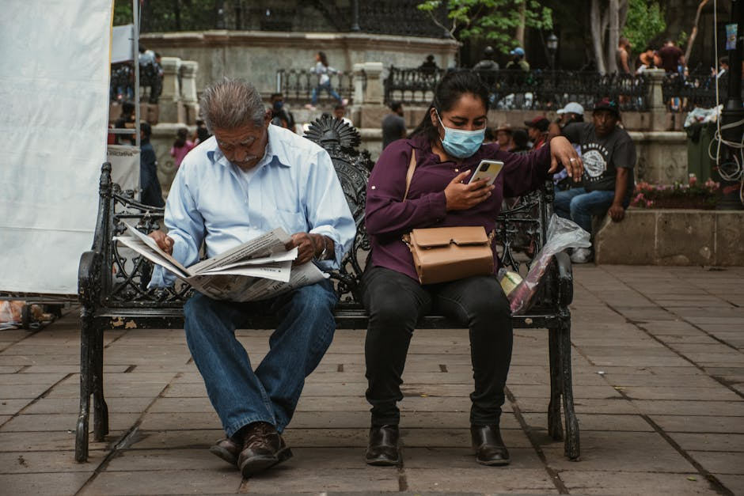

L'officina digitale dell'informazione indipendente
Salugi Works seleziona e promuove le migliori notizie di attualità e l'analisi politica più tagliente. Costruiamo la verità, parola dopo parola.
Esplora i nostri contenutiUn giornalismo che fa la differenza
Promuoviamo una rivista di attualità e approfondimenti pensata per chi non si accontenta dei titoli strillati, ma cerca sostanza e rigore.
Notizie di Attualità
Rimaniamo ancorati ai fatti. Selezioniamo le notizie cruciali del giorno per offrirti una panoramica completa e verificata sugli eventi che cambiano il mondo.

Analisi Politica
Decodifichiamo i palazzi del potere. I nostri editoriali e le riflessioni politiche ti aiutano a comprendere le dinamiche nascoste dietro le decisioni dei governi.

Inchieste e Reportage
Scaviamo a fondo dove altri si fermano. Promuoviamo inchieste coraggiose e reportage sul campo per portare alla luce verità scomode e silenziate.
La nostra missione: dare voce alla verità
Salugi Works nasce con l'obiettivo di supportare e diffondere la cultura di una vera rivista di attualità e approfondimenti. Selezioniamo e promuoviamo contenuti editoriali di alto livello, spaziando dalle notizie di attualità quotidiane alle indagini sociali più complesse e stratificate.
Il nostro impegno è dare ampio spazio a reportage internazionali e inchieste coraggiose, offrendo ai lettori gli strumenti adeguati per interpretare una realtà in continuo mutamento. Lavoriamo costantemente per valorizzare editoriali che stimolino il pensiero critico e l'analisi politica indipendente.


Cosa dicono i nostri lettori
Testimonianze di chi ha scelto l'informazione indipendente.
"Le inchieste proposte da Salugi Works hanno cambiato radicalmente il mio modo di leggere le notizie di attualità. Un giornalismo che non fa sconti a nessuno."
- Marco L., 2026
"L'analisi politica è sempre lucida e mai banale. Un punto di riferimento quotidiano per districarsi nella complessità del nostro tempo."
- Elena T., 2026
"Finalmente reportage che vanno oltre la superficie. Consigliatissimo per chi cerca approfondimenti reali e firme autorevoli."
- Giovanni S., 2026
Domande Frequenti
Tutto ciò che c'è da sapere sulla nostra proposta informativa.
Di cosa si occupa questa rivista di attualità e approfondimenti?
Ci dedichiamo alla promozione di un giornalismo di alta qualità, focalizzandoci su notizie di attualità, analisi politica accurata, reportage internazionali e inchieste esclusive per offrire una visione completa dei fatti.
Con quale frequenza promuovete nuove inchieste e reportage?
L'aggiornamento è continuo. Segnaliamo le inchieste più rilevanti non appena vengono pubblicate, garantendo un flusso costante di approfondimenti per chi vuole restare sempre informato.
Chi scrive gli editoriali e l'analisi politica?
I contenuti promossi provengono da firme autorevoli e giornalisti investigativi esperti, professionisti capaci di leggere le dinamiche del potere in modo indipendente e critico.
Cosa differenzia il vostro approccio alle notizie di attualità?
Rifiutiamo il sensazionalismo. Privilegiamo l'accuratezza, la verifica rigorosa delle fonti e il contesto, trasformando le semplici notizie in veri e propri strumenti di conoscenza.
Come posso accedere ai contenuti completi?
I contenuti integrali sono accessibili tramite i servizi del fornitore editoriale originale che promuoviamo. Puoi richiedere maggiori informazioni tramite il nostro modulo di contatto per essere guidato.
Resta in contatto con noi
Richiedi informazioni sui nostri servizi promozionali.
La nostra sede
Indirizzo
Via della Dogana Vecchia 29
00186 Roma, Italia
Orari di apertura
Lunedì - Venerdì: 09:00 - 18:00
Sabato e Domenica: Chiuso